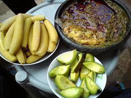

Ampesi with Kontomire Stew Recipe

Description
Ampesi is a cherished Ghanaian dish that showcases the simplicity and heartiness of local ingredients. Typically consisting of boiled yam, plantain, or cocoyam served with a rich, spicy vegetable stew, Ampesi is a versatile meal enjoyed across Ghana. This version pairs tender boiled yam with a vibrant kontomire (spinach) stew, bursting with flavors from smoked fish and palm oil.
Ready in about 45 minutes, this recipe brings the warmth of Ghanaian home cooking to your table. It’s perfect for family dinners or sharing with friends to celebrate Ghana’s rich culinary heritage!
Ingredients
- 2 medium yams, peeled and cut into chunks
- 2 cups kontomire (or spinach), washed and chopped
- 1 medium onion, chopped
- 2 medium tomatoes, blended
- 1/4 cup palm oil
- 1 tablespoon ground dried shrimp (optional)
- 2 cloves garlic, minced
- 1 teaspoon ginger, grated
- 1 scotch bonnet pepper, chopped (adjust to taste)
- 1 cup smoked fish, deboned and flaked
- Salt to taste
- Water as needed
Steps
- Boil the yam chunks in salted water for 15-20 minutes until tender. Drain and set aside.
- Heat palm oil in a pot over medium heat. Sauté onions, garlic, and ginger until fragrant, about 3 minutes.
- Add blended tomatoes and scotch bonnet pepper. Cook for 5 minutes until the sauce thickens.
- Stir in ground shrimp (if using) and smoked fish. Add kontomire leaves and mix well.
- Add 1/2 cup water, cover, and simmer for 10 minutes, stirring occasionally. Season with salt.
- Serve the boiled yam hot with a generous portion of kontomire stew on the side.
Back to Home